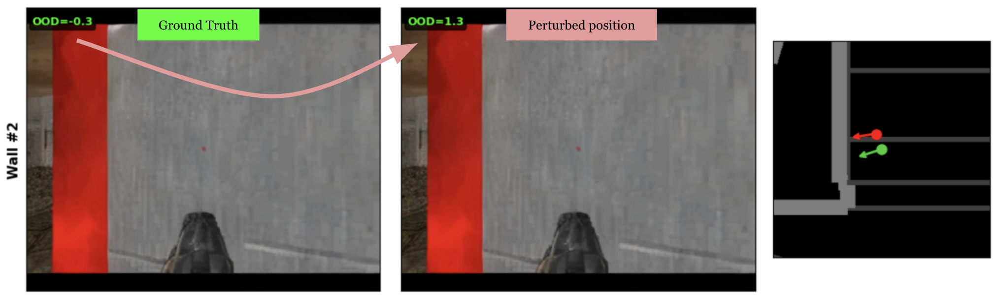
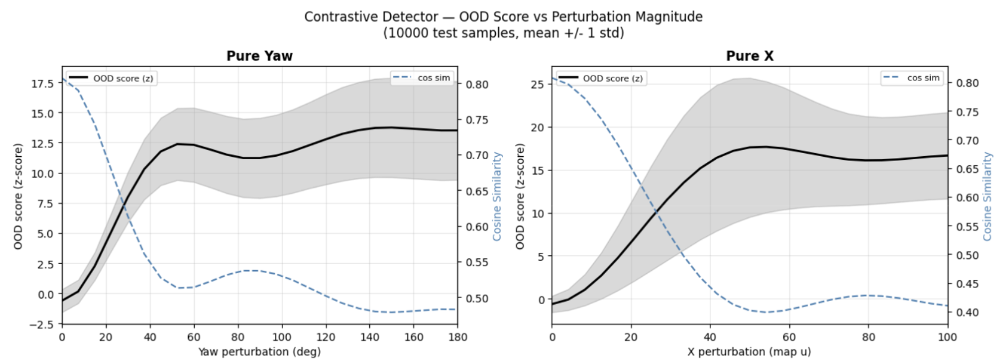
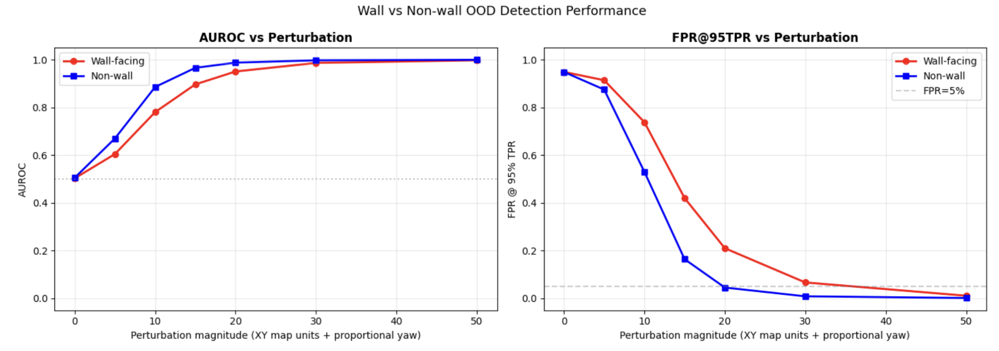

World Model Drift Detection in Multiplayer Environments:
A CLIP-Based Approach
1Stanford University
Look at the wall HARDER, you may drift!
Intro
World models drift, from game simulation (GameNGen, Oasis), autonomous driving (GAIA-1, Vista), robotics (UniSim, Genie, DVA), they generate long enough and prediction errors compound until the output no longer matches reality. The usual response is to extend the context window or compress memory more efficiently.
Let's takes a different approach: instead of preventing drift, detect it. And what you do after is another question. Steer the next frame? Reset? Integrate it inside the loss function...
The testbed is a multiplayer Doom world model (MultiGen [1]) with shared state memory for multiple players & one consistent world. Drift here is especially destructive because one player's divergence corrupts the shared state for everyone.
The detector borrows from CLIP [2]: match image latents to map coordinates via contrastive learning. Low cosine similarity means the frame doesn't belong at that player's view. Small model, thousands of frames per second at inference, idea applicable to any world model conditioned on position or pose.
Results
To demonstrate the detector's behaviour on held-out test data, each video isolates one variable to show what the model is actually sensitive to.
Detecting image latent drift (Varying the input latent)
Fix the position to the ground truth. Walk through a segment of frames, from the GT frame, moving around, and returning to GT. The OOD score stays low near the GT frame (where the latent actually matches the position) and rises as the latent drifts further away in the episode. This is the primary use case: detecting when the world model's output no longer matches where the player is.
Detecting position drift (Varying the position)
Fix the image latent to the ground truth frame. Move the position in a spiral outward from GT, then sweep yaw ±90°. The OOD score correlates with the displacement, rising as position diverges and returns to baseline when the position comes back. The yaw sweep shows the model is also sensitive to orientation, not just XY.
Architecture
CLIP [2]-style dual encoder. Two independent encoders project into the same embedding space. The cosine similarity between them is the matching score after spatial calibration.


Latent encoder
Takes the image latent from the world model's VAE. A strided convolution patchifies it into a token grid. Register tokens are added in the transformer as dedicated slots for global information (like DINOv2 [4] did). A few transformer layers then process the tokens with:
- 2D RoPE: encodes row and column position for the non-square spatial grid
- QK-norm: stabilises attention when the temperature is also learned
- SwiGLU: gated feed-forward, lets the model suppress position-irrelevant features
- Stochastic depth: drops entire residual branches per sample in training
Global average pool over spatial tokens (registers excluded), project, L2 normalise to ensure only the direction is compared.
Position encoder
Takes (x, y, yaw) and encodes it with sinusoidal positional encoding at log-spaced frequencies:
- Low frequencies capture coarse structure (which rooms)
- High frequencies capture fine structure (specific POVs)
Then uses MLP to map this to the same embedding space as the latent encoder. Position is only 3 DoF, so over-parameterising will lead to memorising rather than generalising smooth spatial relationships.
Loss
Symmetric InfoNCE (CLIP [2]'s contrastive loss). Each latent should match its own position and vice versa. The similarity matrix is latent_emb @ position_emb.T * τ where τ is a learned temperature scalar that controls how sharp the softmax is. It initialised at ~14 and grew to ~35 during training as the embeddings became more discriminative. Embeddings are gathered across all GPUs so every sample in the batch is a negative for every other sample. More negatives means sharper gradients and a harder problem to solve, which makes better generalisation.
Noise Invariance
The model learns the semantic content of a frame, so the room, the wall, and direction instead of the rendering quality! The contrastive objective forces the encoder to extract position-relevant structure and discard everything else. Even with visibly strong distortions, the score is still in-distribution.
The noise sweep shows score barely moves through moderate noise because the scene structure is intact, and only rises when noise is extreme and blurs the image entirely.
Training reinforces this with four augmentations: multi-scale spatially-correlated noise (matching AR model artifacts, not Gaussian), frequency domain attenuation (simulating the high-freq detail loss AR models produce), 50% FLIP [3]-style patch masking (randomly dropping half the spatial tokens before the transformer), and position jitter (adding small position perturbations).
Performance
Image drift vs position drift
In practice, image drift is the dominant failure mode. The observation model in MultiGen [1] (which generates frames) drifts first, the visual output degrades while the player's position is still roughly correct. Position drift, when it happens, is a downstream consequence: the dynamics module predicts the next position from the current state, and once the observation model has corrupted that state, the position predictions follow. This means the contrastive detector primarily fires on image drift, which is the earlier and more common signal.
Spatially-adaptive calibration
Raw cosine similarity varies by map region (model is not generalised enough!). Open areas with diverse visual content produce higher baseline similarity than corridors or wall-facing positions (which have less visual diversity to disambiguate). Without correction, wall-facing frames would always score as OOD regardless of whether they're actually drifted.
Spatially-adaptive calibration fixes this. The full training set is scored, positions are binned into a spatial grid, and per-bin statistics are computed. At inference, the OOD score is z-normalised against the local region's baseline, a "low" cosine similarity in a complex open area is evaluated relative to what's normal for that region, not relative to the global average.
Wall-facing frames

The hardest test case. Wall-facing frames have low visual diversity. Many different walls across the map look similar (same texture, flat geometry, uniform lighting). The model must distinguish "this specific wall at this specific position" from "a wall in another room," which is inherently harder than distinguishing two open rooms with different layouts.
The evaluation runs separate AUROC and FPR@95 metrics for wall-facing vs non-wall subsets. Wall-facing frames have higher false positive rates at matched thresholds and this is expected.
Perturbation sensitivity

This perturbation sweep increases position displacement along x and yaw respectively, measuring how the OOD score responds. The score rises smoothly and monotonically with displacement. And the detector reaches near-perfect separation for moderate displacements.
For very small perturbations (<10 units), detection is partial. The position jitter augmentation deliberately makes the model tolerant to sub-unit variations, so very small mismatches are in the noise floor.
FPR, TPR, and AUROC

AUROC and FPR@95%TPR are evaluated separately for wall-facing and non-wall frames. Wall-facing frames are harder to classify (lower AUROC, higher FPR) because walls carry less visual information per position.
Which metric matters more depends on the application. For interactive generation (games, simulation), FPR dominates user experience as false alarms trigger unnecessary resetting from ground truth, causing gameplay interference. A low FPR keeps generation smooth.
For safety-critical applications (robotics, autonomous driving), TPR is more critical as a missed drift event means the system is acting on a hallucinated world state. In that setting, higher FPR is acceptable if it means catching every real drift. But after all its a balance because you don't want the alarm to be on 24/7.
Limitations and Future
Map-specific model. The position encoder uses absolute coordinates so the model is trained for a specific map and doesn't transfer to new environments. Conditioning on relative position signals instead (e.g., depth maps, local geometry) would decouple the detector from any particular map layout and allow generalisation across environments without retraining.
Simple position encoder. An MLP on sinusoidal features may not capture complex map topology. Two positions that are close in Euclidean distance but separated by a thin wall (and therefore have completely different visual content) get similar position embeddings. But the current approach works well enough for the map tested.
Wall-facing difficulty. Despite calibration, wall-facing frames remain the primary source of false positives. The fundamental issue is that walls have less visual information per position than open areas so there's less signal for the model to match against. Depth-based features as additional input, or even abandoning absolute coordinates as input just like the above point.
Coarse calibration grid. The spatial binning is coarse. Fine-grained map features (doorways, texture boundaries) span sub-bin regions. Bins with few training samples fall back to global stats, which can be poorly calibrated. A finer grid or a learned calibration network would improve spatial uniformity, at the cost of needing more calibration data.
Single-frame scoring. The model sees one frame at a time. A temporal version scoring a short window of recent frames could catch drift earlier by detecting trends in the score trajectory.
Anchor point memory. It is not possible to cheat memory after all. Periodically saving generated frames as anchor points and scoring future frames against them, combined with relative position inputs rather than absolute coordinates, could produce a detector that generalises across maps without retraining per environment.
[2] Radford et al., Learning Transferable Visual Models From Natural Language Supervision (CLIP), 2021
[3] Li et al., Scaling Language-Image Pre-training via Masking (FLIP), CVPR 2023
[4] Oquab et al., DINOv2: Learning Robust Visual Features without Supervision, 2023